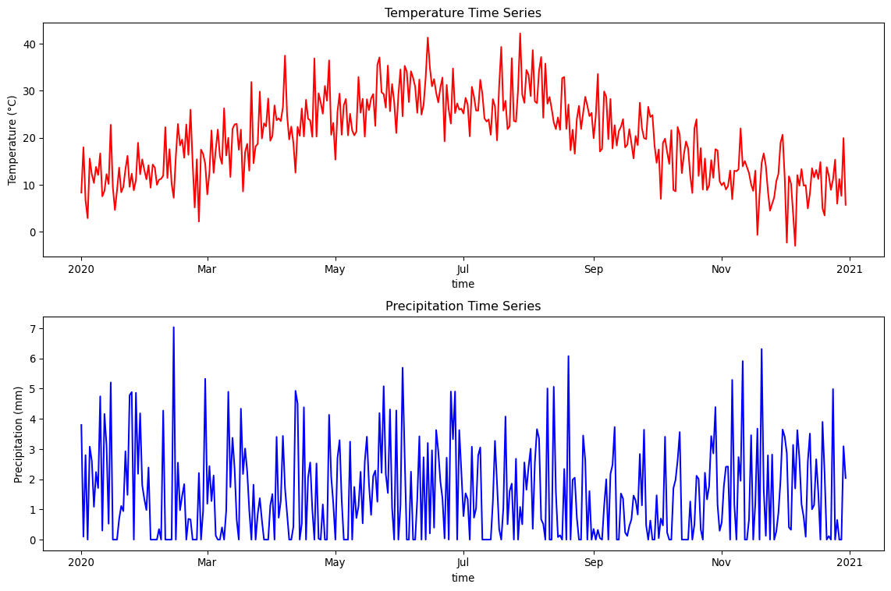
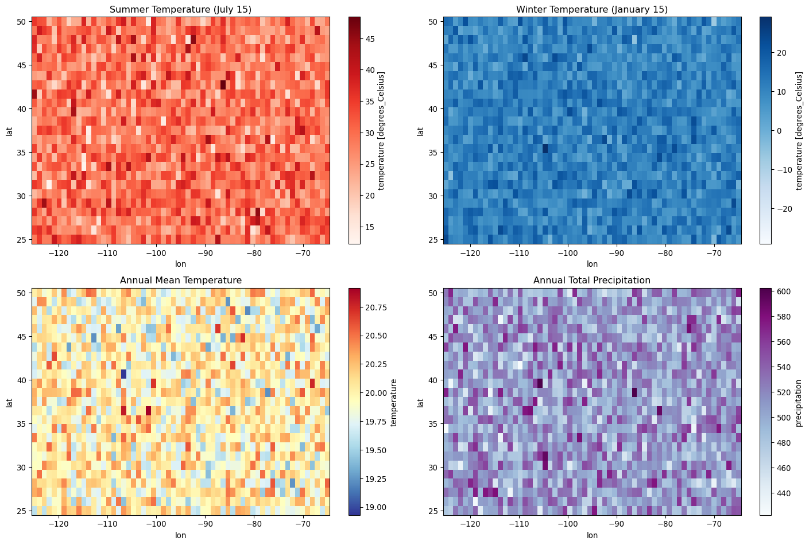

import xarray as xr
import numpy as np
import pandas as pd
import matplotlib.pyplot as plt
print(f"Xarray version: {xr.__version__}")
print(f"NumPy version: {np.__version__}")Xarray version: 2025.7.1
NumPy version: 1.26.4Handling NetCDF and multi-dimensional arrays
Xarray is a powerful Python library for working with labeled, multi-dimensional arrays, particularly useful for climate and geospatial data.
# Create sample temperature data
np.random.seed(42)
# Coordinates
time = pd.date_range('2020-01-01', periods=365, freq='D')
lat = np.linspace(25, 50, 25) # Latitude
lon = np.linspace(-125, -65, 60) # Longitude
# Create temperature data with seasonal pattern
temp_data = np.random.randn(365, 25, 60) * 5 + 20
for i, t in enumerate(time):
seasonal = 10 * np.sin(2 * np.pi * (t.dayofyear - 80) / 365)
temp_data[i] += seasonal
# Create DataArray
temperature = xr.DataArray(
temp_data,
coords={
'time': time,
'lat': lat,
'lon': lon
},
dims=['time', 'lat', 'lon'],
attrs={
'units': 'degrees_Celsius',
'description': 'Daily temperature',
'source': 'Simulated data'
}
)
print(f"Temperature DataArray shape: {temperature.shape}")
print(f"Coordinates: {list(temperature.coords.keys())}")Temperature DataArray shape: (365, 25, 60)
Coordinates: ['time', 'lat', 'lon']# Create precipitation data
precip_data = np.maximum(0, np.random.randn(365, 25, 60) * 2 + 1)
precipitation = xr.DataArray(
precip_data,
coords=temperature.coords,
dims=temperature.dims,
attrs={'units': 'mm', 'description': 'Daily precipitation'}
)
# Create humidity data
humidity_data = np.random.beta(0.7, 0.3, (365, 25, 60)) * 100
humidity = xr.DataArray(
humidity_data,
coords=temperature.coords,
dims=temperature.dims,
attrs={'units': 'percent', 'description': 'Relative humidity'}
)
# Combine into Dataset
weather_ds = xr.Dataset({
'temperature': temperature,
'precipitation': precipitation,
'humidity': humidity
})
print(f"Dataset variables: {list(weather_ds.data_vars)}")
print(f"Dataset dimensions: {weather_ds.sizes}")Dataset variables: ['temperature', 'precipitation', 'humidity']
Dataset dimensions: Frozen({'time': 365, 'lat': 25, 'lon': 60})# Dataset info
print("Dataset structure:")
print(weather_ds)
print(f"\nDataset size in memory: {weather_ds.nbytes / 1e6:.1f} MB")
# Variable info
print(f"\nTemperature statistics:")
print(f" Mean: {weather_ds.temperature.mean().values:.2f}°C")
print(f" Min: {weather_ds.temperature.min().values:.2f}°C")
print(f" Max: {weather_ds.temperature.max().values:.2f}°C")Dataset structure:
<xarray.Dataset> Size: 13MB
Dimensions: (time: 365, lat: 25, lon: 60)
Coordinates:
* time (time) datetime64[ns] 3kB 2020-01-01 ... 2020-12-30
* lat (lat) float64 200B 25.0 26.04 27.08 ... 47.92 48.96 50.0
* lon (lon) float64 480B -125.0 -124.0 -123.0 ... -66.02 -65.0
Data variables:
temperature (time, lat, lon) float64 4MB 12.71 9.53 13.46 ... 9.767 15.39
precipitation (time, lat, lon) float64 4MB 5.153 0.0 0.0 ... 1.206 0.0 0.0
humidity (time, lat, lon) float64 4MB 23.86 14.75 ... 35.48 69.34
Dataset size in memory: 13.1 MB
Temperature statistics:
Mean: 19.99°C
Min: -10.97°C
Max: 51.09°C# Examine coordinates
print("Time coordinate:")
print(f" Start: {weather_ds.time.values[0]}")
print(f" End: {weather_ds.time.values[-1]}")
print(f" Frequency: daily")
print(f"\nSpatial extent:")
print(f" Latitude: {weather_ds.lat.min().values:.1f}° to {weather_ds.lat.max().values:.1f}°")
print(f" Longitude: {weather_ds.lon.min().values:.1f}° to {weather_ds.lon.max().values:.1f}°")
# Check for missing values
print(f"\nMissing values:")
print(f" Temperature: {weather_ds.temperature.isnull().sum().values}")
print(f" Precipitation: {weather_ds.precipitation.isnull().sum().values}")Time coordinate:
Start: 2020-01-01T00:00:00.000000000
End: 2020-12-30T00:00:00.000000000
Frequency: daily
Spatial extent:
Latitude: 25.0° to 50.0°
Longitude: -125.0° to -65.0°
Missing values:
Temperature: 0
Precipitation: 0# Select by coordinate values
summer_data = weather_ds.sel(time=slice('2020-06-01', '2020-08-31'))
print(f"Summer data shape: {summer_data.temperature.shape}")
# Select specific coordinates
point_data = weather_ds.sel(lat=40, lon=-100, method='nearest')
print(f"Point time series shape: {point_data.temperature.shape}")
# Select multiple points
region_data = weather_ds.sel(
lat=slice(30, 45),
lon=slice(-120, -90)
)
print(f"Regional data shape: {region_data.temperature.shape}")Summer data shape: (92, 25, 60)
Point time series shape: (365,)
Regional data shape: (365, 15, 30)# Index-based selection
first_week = weather_ds.isel(time=slice(0, 7))
print(f"First week shape: {first_week.temperature.shape}")
# Select every 10th day
monthly_subset = weather_ds.isel(time=slice(None, None, 10))
print(f"Monthly subset shape: {monthly_subset.temperature.shape}")
# Select specific grid cells
corner_data = weather_ds.isel(lat=[0, -1], lon=[0, -1])
print(f"Corner data shape: {corner_data.temperature.shape}")First week shape: (7, 25, 60)
Monthly subset shape: (37, 25, 60)
Corner data shape: (365, 2, 2)# Temperature-based mask
hot_days = weather_ds.where(weather_ds.temperature > 25, drop=True)
print(f"Hot days data points: {hot_days.temperature.count().values}")
# Multiple conditions
summer_hot = weather_ds.where(
(weather_ds.temperature > 25) &
(weather_ds.time.dt.season == 'JJA'),
drop=True
)
print(f"Summer hot days: {summer_hot.temperature.count().values}")Hot days data points: 171081
Summer hot days: 98382# Global statistics
global_stats = weather_ds.mean()
print("Global mean values:")
for var in global_stats.data_vars:
print(f" {var}: {global_stats[var].values:.2f}")
# Temporal statistics
monthly_means = weather_ds.groupby('time.month').mean()
print(f"Monthly means shape: {monthly_means.temperature.shape}")
# Spatial statistics
spatial_mean = weather_ds.mean(['lat', 'lon'])
print(f"Time series of spatial means: {spatial_mean.temperature.shape}")Global mean values:
temperature: 19.99
precipitation: 1.39
humidity: 69.99
Monthly means shape: (12, 25, 60)
Time series of spatial means: (365,)# Standard deviation
temp_std = weather_ds.temperature.std('time')
print(f"Temperature variability shape: {temp_std.shape}")
# Percentiles
temp_p90 = weather_ds.temperature.quantile(0.9, 'time')
print(f"90th percentile temperature shape: {temp_p90.shape}")
# Cumulative operations
cumulative_precip = weather_ds.precipitation.cumsum('time')
print(f"Cumulative precipitation shape: {cumulative_precip.shape}")Temperature variability shape: (25, 60)
90th percentile temperature shape: (25, 60)
Cumulative precipitation shape: (365, 25, 60)# Group by season
seasonal_stats = weather_ds.groupby('time.season').mean()
print(f"Seasonal statistics dimensions: {seasonal_stats.dims}")
# Group by month
monthly_stats = weather_ds.groupby('time.month').std()
print(f"Monthly variability shape: {monthly_stats.temperature.shape}")
# Custom grouping
def get_decade(time):
return (time.dt.day - 1) // 10
decade_stats = weather_ds.groupby(get_decade(weather_ds.time)).mean()
print("Decade-based statistics created")Seasonal statistics dimensions: FrozenMappingWarningOnValuesAccess({'season': 4, 'lat': 25, 'lon': 60})
Monthly variability shape: (12, 25, 60)
Decade-based statistics created# Time series plot at a specific location
location_ts = weather_ds.sel(lat=40, lon=-100, method='nearest')
fig, axes = plt.subplots(2, 1, figsize=(12, 8))
# Temperature time series
location_ts.temperature.plot(ax=axes[0], color='red')
axes[0].set_title('Temperature Time Series')
axes[0].set_ylabel('Temperature (°C)')
# Precipitation time series
location_ts.precipitation.plot(ax=axes[1], color='blue')
axes[1].set_title('Precipitation Time Series')
axes[1].set_ylabel('Precipitation (mm)')
plt.tight_layout()
plt.show()
# Plot spatial maps for specific dates
fig, axes = plt.subplots(2, 2, figsize=(15, 10))
# Summer and winter temperature maps
summer_temp = weather_ds.temperature.sel(time='2020-07-15')
winter_temp = weather_ds.temperature.sel(time='2020-01-15')
summer_temp.plot(ax=axes[0,0], cmap='Reds', add_colorbar=True)
axes[0,0].set_title('Summer Temperature (July 15)')
winter_temp.plot(ax=axes[0,1], cmap='Blues', add_colorbar=True)
axes[0,1].set_title('Winter Temperature (January 15)')
# Annual mean temperature and precipitation
annual_temp_mean = weather_ds.temperature.mean('time')
annual_precip_sum = weather_ds.precipitation.sum('time')
annual_temp_mean.plot(ax=axes[1,0], cmap='RdYlBu_r', add_colorbar=True)
axes[1,0].set_title('Annual Mean Temperature')
annual_precip_sum.plot(ax=axes[1,1], cmap='BuPu', add_colorbar=True)
axes[1,1].set_title('Annual Total Precipitation')
plt.tight_layout()
plt.show()
# Convert Celsius to Fahrenheit
temp_fahrenheit = weather_ds.temperature * 9/5 + 32
temp_fahrenheit.attrs['units'] = 'degrees_Fahrenheit'
print(f"Temperature in F: {temp_fahrenheit.mean().values:.1f}°F")
# Calculate derived variables
# Heat index approximation (simplified)
heat_index = (weather_ds.temperature + weather_ds.humidity * 0.1)
heat_index.attrs['description'] = 'Simplified heat index'
# Daily temperature range
daily_temp_range = weather_ds.temperature.max(['lat', 'lon']) - weather_ds.temperature.min(['lat', 'lon'])
print(f"Daily temperature range shape: {daily_temp_range.shape}")Temperature in F: 68.0°F
Daily temperature range shape: (365,)# Temporal resampling
weekly_data = weather_ds.resample(time='W').mean()
print(f"Weekly data shape: {weekly_data.temperature.shape}")
monthly_data = weather_ds.resample(time='M').mean()
print(f"Monthly data shape: {monthly_data.temperature.shape}")
# Interpolation
# Create higher resolution coordinates
high_res_lat = np.linspace(25, 50, 50) # Double resolution
high_res_lon = np.linspace(-125, -65, 120)
# Interpolate to higher resolution
high_res_data = weather_ds.interp(lat=high_res_lat, lon=high_res_lon)
print(f"High resolution shape: {high_res_data.temperature.shape}")Weekly data shape: (53, 25, 60)
Monthly data shape: (12, 25, 60)/Users/kellycaylor/mambaforge/envs/geoAI/lib/python3.11/site-packages/xarray/groupers.py:509: FutureWarning:
'M' is deprecated and will be removed in a future version, please use 'ME' instead.
High resolution shape: (365, 50, 120)# Rolling mean (7-day moving average)
rolling_temp = weather_ds.temperature.rolling(time=7, center=True).mean()
print(f"7-day rolling mean shape: {rolling_temp.shape}")
# Rolling sum for precipitation (weekly totals)
weekly_precip = weather_ds.precipitation.rolling(time=7).sum()
print(f"Weekly precipitation totals shape: {weekly_precip.shape}")7-day rolling mean shape: (365, 25, 60)
Weekly precipitation totals shape: (365, 25, 60)# Save dataset to NetCDF
weather_ds.to_netcdf('sample_weather_data.nc')
print("Dataset saved to NetCDF file")
# Load dataset from file
loaded_ds = xr.open_dataset('sample_weather_data.nc')
print(f"Loaded dataset variables: {list(loaded_ds.data_vars)}")
# Open multiple files (example pattern)
# multi_file_ds = xr.open_mfdataset('weather_*.nc', combine='by_coords')Dataset saved to NetCDF file
Loaded dataset variables: ['temperature', 'precipitation', 'humidity']# Create chunked dataset for large data
chunked_ds = weather_ds.chunk({'time': 30, 'lat': 10, 'lon': 20})
print(f"Chunked dataset: {chunked_ds.temperature}")
# Lazy operations with chunked data
lazy_mean = chunked_ds.temperature.mean()
print(f"Lazy computation created: {type(lazy_mean.data)}")
# Compute result
actual_mean = lazy_mean.compute()
print(f"Computed mean: {actual_mean.values:.2f}")Chunked dataset: <xarray.DataArray 'temperature' (time: 365, lat: 25, lon: 60)> Size: 4MB
dask.array<xarray-temperature, shape=(365, 25, 60), dtype=float64, chunksize=(30, 10, 20), chunktype=numpy.ndarray>
Coordinates:
* time (time) datetime64[ns] 3kB 2020-01-01 2020-01-02 ... 2020-12-30
* lat (lat) float64 200B 25.0 26.04 27.08 28.12 ... 47.92 48.96 50.0
* lon (lon) float64 480B -125.0 -124.0 -123.0 ... -67.03 -66.02 -65.0
Attributes:
units: degrees_Celsius
description: Daily temperature
source: Simulated data
Lazy computation created: <class 'dask.array.core.Array'>
Computed mean: 19.99# Add new coordinates
weather_ds_with_doy = weather_ds.assign_coords(
day_of_year=weather_ds.time.dt.dayofyear
)
# Stack/unstack dimensions
stacked = weather_ds.stack(location=['lat', 'lon'])
print(f"Stacked dimensions: {stacked.temperature.dims}")
unstacked = stacked.unstack('location')
print(f"Unstacked back to: {unstacked.temperature.dims}")Stacked dimensions: ('time', 'location')
Unstacked back to: ('time', 'lat', 'lon')# Apply custom function along dimension
def temp_category(temp_array):
"""Categorize temperature"""
return xr.where(temp_array < 0, 'cold',
xr.where(temp_array < 20, 'mild', 'warm'))
temp_categories = xr.apply_ufunc(
temp_category,
weather_ds.temperature,
dask='allowed',
output_dtypes=[object]
)
print("Temperature categorization applied")Temperature categorization applied# Split dataset by time
first_half = weather_ds.isel(time=slice(0, 182))
second_half = weather_ds.isel(time=slice(182, None))
# Concatenate back together
full_dataset = xr.concat([first_half, second_half], dim='time')
print(f"Concatenated dataset shape: {full_dataset.temperature.shape}")
# Merge different datasets
elevation_data = xr.DataArray(
np.random.randint(0, 3000, (25, 60)),
coords={'lat': lat, 'lon': lon},
dims=['lat', 'lon'],
attrs={'units': 'meters', 'description': 'Elevation'}
)
merged_ds = weather_ds.merge({'elevation': elevation_data})
print(f"Merged dataset variables: {list(merged_ds.data_vars)}")Concatenated dataset shape: (365, 25, 60)
Merged dataset variables: ['temperature', 'precipitation', 'humidity', 'elevation']# Check memory usage
print(f"Dataset memory usage: {weather_ds.nbytes / 1e6:.1f} MB")
# Use lazy loading for large files
# lazy_ds = xr.open_dataset('large_file.nc', chunks={'time': 100})
# Close files when done
loaded_ds.close()
print("File closed to free memory")Dataset memory usage: 13.1 MB
File closed to free memory# Use vectorized operations
efficient_calc = weather_ds.temperature - weather_ds.temperature.mean('time')
print("Efficient anomaly calculation completed")
# Avoid loops when possible - use built-in functions
monthly_anomalies = weather_ds.groupby('time.month') - weather_ds.groupby('time.month').mean()
print("Monthly anomalies calculated efficiently")Efficient anomaly calculation completed
Monthly anomalies calculated efficientlyKey Xarray concepts: - DataArrays: Labeled, multi-dimensional arrays - Datasets: Collections of DataArrays with shared coordinates
- Coordinates: Labels for array dimensions - Selection: Label-based (.sel) and integer-based (.isel) - GroupBy: Split-apply-combine operations - Resampling: Temporal aggregation and frequency conversion - I/O: Reading/writing NetCDF and other formats - Dask integration: Lazy evaluation for large datasets
---
title: "Xarray for Multi-dimensional Data"
subtitle: "Handling NetCDF and multi-dimensional arrays"
jupyter: geoai
format:
html:
code-fold: false
---
## Introduction to Xarray
Xarray is a powerful Python library for working with labeled, multi-dimensional arrays, particularly useful for climate and geospatial data.
```{python}
import xarray as xr
import numpy as np
import pandas as pd
import matplotlib.pyplot as plt
print(f"Xarray version: {xr.__version__}")
print(f"NumPy version: {np.__version__}")
```
## Creating Sample Data
### Creating DataArrays
```{python}
# Create sample temperature data
np.random.seed(42)
# Coordinates
time = pd.date_range('2020-01-01', periods=365, freq='D')
lat = np.linspace(25, 50, 25) # Latitude
lon = np.linspace(-125, -65, 60) # Longitude
# Create temperature data with seasonal pattern
temp_data = np.random.randn(365, 25, 60) * 5 + 20
for i, t in enumerate(time):
seasonal = 10 * np.sin(2 * np.pi * (t.dayofyear - 80) / 365)
temp_data[i] += seasonal
# Create DataArray
temperature = xr.DataArray(
temp_data,
coords={
'time': time,
'lat': lat,
'lon': lon
},
dims=['time', 'lat', 'lon'],
attrs={
'units': 'degrees_Celsius',
'description': 'Daily temperature',
'source': 'Simulated data'
}
)
print(f"Temperature DataArray shape: {temperature.shape}")
print(f"Coordinates: {list(temperature.coords.keys())}")
```
### Creating Datasets
```{python}
# Create precipitation data
precip_data = np.maximum(0, np.random.randn(365, 25, 60) * 2 + 1)
precipitation = xr.DataArray(
precip_data,
coords=temperature.coords,
dims=temperature.dims,
attrs={'units': 'mm', 'description': 'Daily precipitation'}
)
# Create humidity data
humidity_data = np.random.beta(0.7, 0.3, (365, 25, 60)) * 100
humidity = xr.DataArray(
humidity_data,
coords=temperature.coords,
dims=temperature.dims,
attrs={'units': 'percent', 'description': 'Relative humidity'}
)
# Combine into Dataset
weather_ds = xr.Dataset({
'temperature': temperature,
'precipitation': precipitation,
'humidity': humidity
})
print(f"Dataset variables: {list(weather_ds.data_vars)}")
print(f"Dataset dimensions: {weather_ds.sizes}")
```
## Basic Data Inspection
### Dataset overview
```{python}
# Dataset info
print("Dataset structure:")
print(weather_ds)
print(f"\nDataset size in memory: {weather_ds.nbytes / 1e6:.1f} MB")
# Variable info
print(f"\nTemperature statistics:")
print(f" Mean: {weather_ds.temperature.mean().values:.2f}°C")
print(f" Min: {weather_ds.temperature.min().values:.2f}°C")
print(f" Max: {weather_ds.temperature.max().values:.2f}°C")
```
### Coordinate inspection
```{python}
# Examine coordinates
print("Time coordinate:")
print(f" Start: {weather_ds.time.values[0]}")
print(f" End: {weather_ds.time.values[-1]}")
print(f" Frequency: daily")
print(f"\nSpatial extent:")
print(f" Latitude: {weather_ds.lat.min().values:.1f}° to {weather_ds.lat.max().values:.1f}°")
print(f" Longitude: {weather_ds.lon.min().values:.1f}° to {weather_ds.lon.max().values:.1f}°")
# Check for missing values
print(f"\nMissing values:")
print(f" Temperature: {weather_ds.temperature.isnull().sum().values}")
print(f" Precipitation: {weather_ds.precipitation.isnull().sum().values}")
```
## Data Selection and Indexing
### Label-based selection
```{python}
# Select by coordinate values
summer_data = weather_ds.sel(time=slice('2020-06-01', '2020-08-31'))
print(f"Summer data shape: {summer_data.temperature.shape}")
# Select specific coordinates
point_data = weather_ds.sel(lat=40, lon=-100, method='nearest')
print(f"Point time series shape: {point_data.temperature.shape}")
# Select multiple points
region_data = weather_ds.sel(
lat=slice(30, 45),
lon=slice(-120, -90)
)
print(f"Regional data shape: {region_data.temperature.shape}")
```
### Integer-based indexing
```{python}
# Index-based selection
first_week = weather_ds.isel(time=slice(0, 7))
print(f"First week shape: {first_week.temperature.shape}")
# Select every 10th day
monthly_subset = weather_ds.isel(time=slice(None, None, 10))
print(f"Monthly subset shape: {monthly_subset.temperature.shape}")
# Select specific grid cells
corner_data = weather_ds.isel(lat=[0, -1], lon=[0, -1])
print(f"Corner data shape: {corner_data.temperature.shape}")
```
### Boolean masking
```{python}
# Temperature-based mask
hot_days = weather_ds.where(weather_ds.temperature > 25, drop=True)
print(f"Hot days data points: {hot_days.temperature.count().values}")
# Multiple conditions
summer_hot = weather_ds.where(
(weather_ds.temperature > 25) &
(weather_ds.time.dt.season == 'JJA'),
drop=True
)
print(f"Summer hot days: {summer_hot.temperature.count().values}")
```
## Statistical Operations
### Basic statistics
```{python}
# Global statistics
global_stats = weather_ds.mean()
print("Global mean values:")
for var in global_stats.data_vars:
print(f" {var}: {global_stats[var].values:.2f}")
# Temporal statistics
monthly_means = weather_ds.groupby('time.month').mean()
print(f"Monthly means shape: {monthly_means.temperature.shape}")
# Spatial statistics
spatial_mean = weather_ds.mean(['lat', 'lon'])
print(f"Time series of spatial means: {spatial_mean.temperature.shape}")
```
### Advanced aggregations
```{python}
# Standard deviation
temp_std = weather_ds.temperature.std('time')
print(f"Temperature variability shape: {temp_std.shape}")
# Percentiles
temp_p90 = weather_ds.temperature.quantile(0.9, 'time')
print(f"90th percentile temperature shape: {temp_p90.shape}")
# Cumulative operations
cumulative_precip = weather_ds.precipitation.cumsum('time')
print(f"Cumulative precipitation shape: {cumulative_precip.shape}")
```
### Groupby operations
```{python}
# Group by season
seasonal_stats = weather_ds.groupby('time.season').mean()
print(f"Seasonal statistics dimensions: {seasonal_stats.dims}")
# Group by month
monthly_stats = weather_ds.groupby('time.month').std()
print(f"Monthly variability shape: {monthly_stats.temperature.shape}")
# Custom grouping
def get_decade(time):
return (time.dt.day - 1) // 10
decade_stats = weather_ds.groupby(get_decade(weather_ds.time)).mean()
print("Decade-based statistics created")
```
## Data Visualization
### Simple plots
```{python}
# Time series plot at a specific location
location_ts = weather_ds.sel(lat=40, lon=-100, method='nearest')
fig, axes = plt.subplots(2, 1, figsize=(12, 8))
# Temperature time series
location_ts.temperature.plot(ax=axes[0], color='red')
axes[0].set_title('Temperature Time Series')
axes[0].set_ylabel('Temperature (°C)')
# Precipitation time series
location_ts.precipitation.plot(ax=axes[1], color='blue')
axes[1].set_title('Precipitation Time Series')
axes[1].set_ylabel('Precipitation (mm)')
plt.tight_layout()
plt.show()
```
### Spatial maps
```{python}
# Plot spatial maps for specific dates
fig, axes = plt.subplots(2, 2, figsize=(15, 10))
# Summer and winter temperature maps
summer_temp = weather_ds.temperature.sel(time='2020-07-15')
winter_temp = weather_ds.temperature.sel(time='2020-01-15')
summer_temp.plot(ax=axes[0,0], cmap='Reds', add_colorbar=True)
axes[0,0].set_title('Summer Temperature (July 15)')
winter_temp.plot(ax=axes[0,1], cmap='Blues', add_colorbar=True)
axes[0,1].set_title('Winter Temperature (January 15)')
# Annual mean temperature and precipitation
annual_temp_mean = weather_ds.temperature.mean('time')
annual_precip_sum = weather_ds.precipitation.sum('time')
annual_temp_mean.plot(ax=axes[1,0], cmap='RdYlBu_r', add_colorbar=True)
axes[1,0].set_title('Annual Mean Temperature')
annual_precip_sum.plot(ax=axes[1,1], cmap='BuPu', add_colorbar=True)
axes[1,1].set_title('Annual Total Precipitation')
plt.tight_layout()
plt.show()
```
## Data Manipulation and Processing
### Mathematical operations
```{python}
# Convert Celsius to Fahrenheit
temp_fahrenheit = weather_ds.temperature * 9/5 + 32
temp_fahrenheit.attrs['units'] = 'degrees_Fahrenheit'
print(f"Temperature in F: {temp_fahrenheit.mean().values:.1f}°F")
# Calculate derived variables
# Heat index approximation (simplified)
heat_index = (weather_ds.temperature + weather_ds.humidity * 0.1)
heat_index.attrs['description'] = 'Simplified heat index'
# Daily temperature range
daily_temp_range = weather_ds.temperature.max(['lat', 'lon']) - weather_ds.temperature.min(['lat', 'lon'])
print(f"Daily temperature range shape: {daily_temp_range.shape}")
```
### Resampling and interpolation
```{python}
# Temporal resampling
weekly_data = weather_ds.resample(time='W').mean()
print(f"Weekly data shape: {weekly_data.temperature.shape}")
monthly_data = weather_ds.resample(time='M').mean()
print(f"Monthly data shape: {monthly_data.temperature.shape}")
# Interpolation
# Create higher resolution coordinates
high_res_lat = np.linspace(25, 50, 50) # Double resolution
high_res_lon = np.linspace(-125, -65, 120)
# Interpolate to higher resolution
high_res_data = weather_ds.interp(lat=high_res_lat, lon=high_res_lon)
print(f"High resolution shape: {high_res_data.temperature.shape}")
```
### Rolling operations
```{python}
# Rolling mean (7-day moving average)
rolling_temp = weather_ds.temperature.rolling(time=7, center=True).mean()
print(f"7-day rolling mean shape: {rolling_temp.shape}")
# Rolling sum for precipitation (weekly totals)
weekly_precip = weather_ds.precipitation.rolling(time=7).sum()
print(f"Weekly precipitation totals shape: {weekly_precip.shape}")
```
## Working with Real NetCDF Files
### File I/O operations
```{python}
# Save dataset to NetCDF
weather_ds.to_netcdf('sample_weather_data.nc')
print("Dataset saved to NetCDF file")
# Load dataset from file
loaded_ds = xr.open_dataset('sample_weather_data.nc')
print(f"Loaded dataset variables: {list(loaded_ds.data_vars)}")
# Open multiple files (example pattern)
# multi_file_ds = xr.open_mfdataset('weather_*.nc', combine='by_coords')
```
### Chunking and Dask integration
```{python}
# Create chunked dataset for large data
chunked_ds = weather_ds.chunk({'time': 30, 'lat': 10, 'lon': 20})
print(f"Chunked dataset: {chunked_ds.temperature}")
# Lazy operations with chunked data
lazy_mean = chunked_ds.temperature.mean()
print(f"Lazy computation created: {type(lazy_mean.data)}")
# Compute result
actual_mean = lazy_mean.compute()
print(f"Computed mean: {actual_mean.values:.2f}")
```
## Advanced Operations
### Coordinate operations
```{python}
# Add new coordinates
weather_ds_with_doy = weather_ds.assign_coords(
day_of_year=weather_ds.time.dt.dayofyear
)
# Stack/unstack dimensions
stacked = weather_ds.stack(location=['lat', 'lon'])
print(f"Stacked dimensions: {stacked.temperature.dims}")
unstacked = stacked.unstack('location')
print(f"Unstacked back to: {unstacked.temperature.dims}")
```
### Apply functions
```{python}
# Apply custom function along dimension
def temp_category(temp_array):
"""Categorize temperature"""
return xr.where(temp_array < 0, 'cold',
xr.where(temp_array < 20, 'mild', 'warm'))
temp_categories = xr.apply_ufunc(
temp_category,
weather_ds.temperature,
dask='allowed',
output_dtypes=[object]
)
print("Temperature categorization applied")
```
### Merge and concatenate
```{python}
# Split dataset by time
first_half = weather_ds.isel(time=slice(0, 182))
second_half = weather_ds.isel(time=slice(182, None))
# Concatenate back together
full_dataset = xr.concat([first_half, second_half], dim='time')
print(f"Concatenated dataset shape: {full_dataset.temperature.shape}")
# Merge different datasets
elevation_data = xr.DataArray(
np.random.randint(0, 3000, (25, 60)),
coords={'lat': lat, 'lon': lon},
dims=['lat', 'lon'],
attrs={'units': 'meters', 'description': 'Elevation'}
)
merged_ds = weather_ds.merge({'elevation': elevation_data})
print(f"Merged dataset variables: {list(merged_ds.data_vars)}")
```
## Performance Tips and Best Practices
### Memory management
```{python}
# Check memory usage
print(f"Dataset memory usage: {weather_ds.nbytes / 1e6:.1f} MB")
# Use lazy loading for large files
# lazy_ds = xr.open_dataset('large_file.nc', chunks={'time': 100})
# Close files when done
loaded_ds.close()
print("File closed to free memory")
```
### Efficient operations
```{python}
# Use vectorized operations
efficient_calc = weather_ds.temperature - weather_ds.temperature.mean('time')
print("Efficient anomaly calculation completed")
# Avoid loops when possible - use built-in functions
monthly_anomalies = weather_ds.groupby('time.month') - weather_ds.groupby('time.month').mean()
print("Monthly anomalies calculated efficiently")
```
## Summary
Key Xarray concepts:
- **DataArrays**: Labeled, multi-dimensional arrays
- **Datasets**: Collections of DataArrays with shared coordinates
- **Coordinates**: Labels for array dimensions
- **Selection**: Label-based (.sel) and integer-based (.isel)
- **GroupBy**: Split-apply-combine operations
- **Resampling**: Temporal aggregation and frequency conversion
- **I/O**: Reading/writing NetCDF and other formats
- **Dask integration**: Lazy evaluation for large datasets